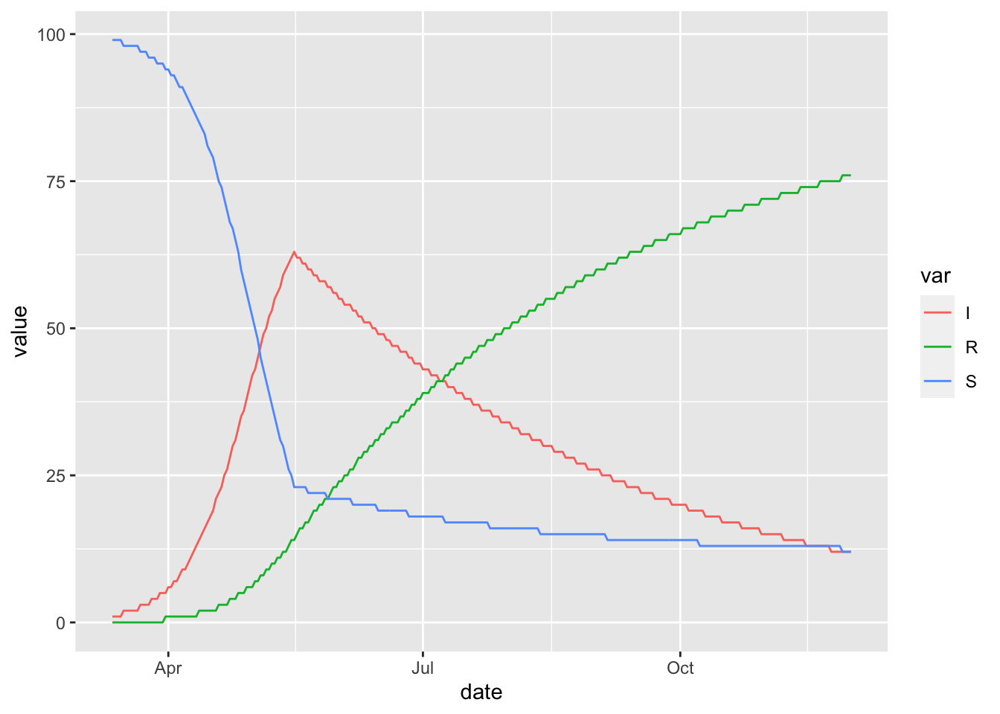

6 Time Varying Parameters
Any parameter in a McMasterPandemic model can be scheduled to vary in time. A time-variation schedule is a data frame with one row for each date on which each parameter changes its value. This data frame has four columns:
Date– Date on which a particular parameter changes its valueSymbol– String giving the symbol representing the changing parameterValue– The numeric value used to change the value of the parameter, the effect of which depends on the value of theTypecolumnType– One of the following strings:"abs"– TheValuecolumn is the new value for the parameter onDate"rel_orig"– TheValuecolumn is multiplied by the original value of the changing parameter at the beginning of the simulation, to generate a new value for the parameter onDate"rel_prev"– TheValuecolumn is multiplied by the previous value of the changing parameter, to generate a new value for the parameter onDate
Once a time-variation data frame is produced it can get added to a model when it is created via the params_timevar argument of flexmodel, or by updating an existing flexmodel object using the update_piece_wise function.
6.1 Example of Time-Variation
In this example we create a time-variation schedule that causes the transmission, beta, drop to very low levels on May 15.
random_timevar = data.frame(
Date = ymd(20200515),
Symbol = 'beta',
Value = 0.01,
Type = 'abs'
)
random_timevar## Date Symbol Value Type
## 1 2020-05-15 beta 0.01 abstimevar_sims = (sir_with_timevar
%>% simulation_history(include_initial_date = FALSE)
%>% tidyr::pivot_longer(-Date, names_to = "var")
%>% rename(date = Date)
%>% mutate(value = round(value))
%>% filter(var %in% c("S", "I", "R"))
)
(ggplot(timevar_sims)
+ geom_line(aes(date, value, colour = var))
)
Notice the abrupt break-point on May 15.
See The SIRV model and Covid SEIR for other examples of the use of time-varying parameters in simulation models.
6.2 Calibrating Time-Variation Schedules
Entries in the Value column can be NA, indicating that these should be fitted using Calibration. When flagging time-variation values for calibration in this way, one must also provide information on any parameter transformations and prior distributions. Do provide this information, we use a technique similar to the one described in the Calibration chapter to specify transformations and prior distributions for parameters in the params element of flexmodel objects. In that chapter we used the add_opt_params function – here we use the add_opt_tv_params function (the tv stands for time-variation).
To illustrate calibration of time-variation values, we mark for calibration the break-point on May 15 in our example above.
Then we update our model with the sir_with_timevar simulations to fit to, and specify how to optimize the parameters.
sir_to_cal_tv = (sir_with_timevar
%>% update_observed(timevar_sims)
%>% update_piece_wise(calibrate_timevar)
%>% add_opt_params(log_beta ~ log_flat(0)
, log_nb_disp_S ~ log_normal(0, 1)
, log_nb_disp_I ~ log_normal(0, 1)
, log_nb_disp_R ~ log_normal(0, 1)
)
%>% add_opt_tv_params(tv_type = "abs"
, log_beta ~ log_flat(0)
)
)The key function here is add_opt_tv_params, which allows us to specify a flat prior on the log scale for fitting the time-variation values.
It turns out that in this case we need to make one technical adjustment – see Simulated time-series close to zero for an explanation.
With this sir_to_cal_tv object we can now fit this model to the simulated data.
## outer mgc: 141602.9
## outer mgc: 323.4935
## outer mgc: 865.305
## outer mgc: 1116.945
## outer mgc: 315.6958
## outer mgc: 1271.766
## outer mgc: 613.5591
## outer mgc: 1285.651
## outer mgc: 2337.036
## outer mgc: 2582.829
## outer mgc: 1173.873
## outer mgc: 283.9274
## outer mgc: 6153.751
## outer mgc: 1189.738
## outer mgc: 253.1351
## outer mgc: 122.3245
## outer mgc: 5804.288
## outer mgc: 4626.501
## outer mgc: 1124.72
## outer mgc: 546.7969
## outer mgc: 4.882029
## outer mgc: 0.5063119
## outer mgc: 0.01292487
## outer mgc: 9.024538e-06The time-variation values before, during, and after optimization look as we would expect, given that we fitted to the same model that generated the data.
c(
before = sir_with_timevar$timevar$piece_wise$schedule$Value,
during = sir_to_cal_tv$timevar$piece_wise$schedule$Value,
after = sir_cal_tv$timevar$piece_wise$schedule$Value
)## before during after
## 0.010000000 NA 0.009945231